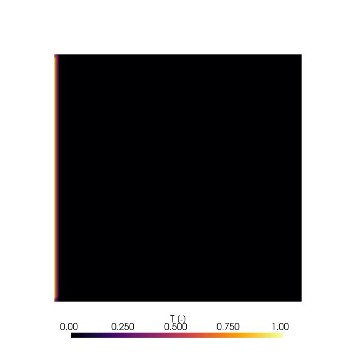

Note
Go to the end to download the full example code.
Build a scalar-transport solver from scratch¶
Build a complete NeoFOAM solver for unsteady scalar transport with a prescribed velocity field:
The smallest PDE that exercises every major framework piece — time
loop, field reads, dependency graph, fvm solve, topological
ordering — without pressure-velocity coupling.
Complete Add a passive scalar transport model first; this tutorial
reuses field(), depends_on, and parameter injection from
there.
Solver imports¶
import contextlib
import subprocess
from typing import Annotated, Any, Optional
import pybFoam as pyf
import pyvista as pv
from pybFoam import (
Info,
fvm,
fvScalarMatrix,
surfaceScalarField,
volScalarField,
volVectorField,
)
from neofoam import Depends, FieldUpdates, Solver, field
from neofoam.framework.context import Context
from neofoam.framework.graph import DAGResolver
from neofoam.framework.initialization import (
ConfigContext,
InitializerBuilder,
InitStep,
LoadResult,
StagedInitRunner,
StagedInitSpec,
lazy,
)
from neofoam.framework.initialization.execution.ordering import (
_topological_sort as topological_sort,
)
from neofoam.framework.operations import (
IterativeOp,
Operation,
Operations,
StepBuilder,
)
from neofoam.framework.types import OperationMetadata
from neofoam.tutorial import clone_case
Define the spec and the time-loop predicate¶
Solver("scalar_transport") returns an empty SolverSpec —
the analogue of Model from tutorial 2. TimeLoop is the
iteration condition for the outer loop; IterativeOp runs it
until it returns False.
class TimeLoop:
def __call__(self, ctx: Context) -> bool:
return bool(ctx.time.run())
scalar_transport = Solver("scalar_transport")
Build the staged initializer¶
create_init returns a StagedInitRunner. Its three stages are
registered as decorators on a per-call StagedInitSpec builder and
defined as closures so build can read runner.argv (the
framework sets runner.argv after create_init returns but
before runner.run()).
This solver has no plugin models, so LOAD and RESOLVE are trivial.
BUILD creates the time object + mesh, then registers one field(...)
per object with depends_on listing prerequisite step names.
create_phi reads ctx["fields.U"] (the prefixed name) because
field("U", ...) produces an InitStep named fields.U.
def create_init(case_dir: Optional[Any] = None) -> StagedInitRunner:
spec_builder = StagedInitSpec.build("scalar_transport")
@spec_builder.load
def load_config() -> LoadResult:
return LoadResult(core_models=[], optional_models=[])
@spec_builder.resolve
def resolve_models(config: ConfigContext) -> None:
pass
@spec_builder.build
def build_lazy(
core_models: list[Any], optional_models: list[Any]
) -> list[InitStep]:
argv = runner.argv
builder = InitializerBuilder()
builder.add(lazy("time", lambda _ctx: pyf.Time(pyf.argList(argv))))
builder.add(
lazy("mesh", lambda ctx: pyf.fvMesh(ctx["time"]), depends_on=["time"])
)
def create_T(ctx: dict[str, Any]) -> volScalarField:
return volScalarField.read_field(ctx["mesh"], "T")
def create_U(ctx: dict[str, Any]) -> volVectorField:
return volVectorField.read_field(ctx["mesh"], "U")
def create_D(ctx: dict[str, Any]) -> volScalarField:
return volScalarField.read_field(ctx["mesh"], "D")
def create_phi(ctx: dict[str, Any]) -> surfaceScalarField:
return pyf.createPhi(ctx["fields.U"])
builder.add(field("T", create_T, depends_on=["mesh"]))
builder.add(field("U", create_U, depends_on=["mesh"]))
builder.add(field("D", create_D, depends_on=["mesh"]))
builder.add(field("phi", create_phi, depends_on=["fields.U"]))
return builder.build()
runner = StagedInitRunner(spec_builder.finalize())
return runner
Register the initializer¶
Every solver has exactly one @initializer. The
Annotated[..., Depends(create_init)] marker tells the framework
to call create_init() and pass its return value as init_obj.
@scalar_transport.initializer
def initialize(
self: Any,
init_obj: Annotated[StagedInitRunner, Depends(create_init)],
) -> Context:
return init_obj.run()
Define the execution graph¶
builder.loop(...) returns a fresh StepBuilder scoped to the
new loop’s body. We return an empty Operations() because no
plugin contributes operations to this solver.
@scalar_transport.execution_graph_step
def execution_graph(
self: Any,
domain_name: Optional[str] = None,
) -> tuple[StepBuilder, Operations]:
ops = self.operations
builder = StepBuilder()
time_loop_op = Operation(
func=IterativeOp(TimeLoop()),
metadata=OperationMetadata(op_name="time_loop"),
)
with builder.loop(time_loop_op) as time_builder:
time_builder.step(ops["increment_time"])
time_builder.step(ops["solve_T"])
time_builder.step(ops["write_output"])
return builder, Operations()
Add the solver’s operations¶
Three operations: increment time, solve T, write output.
Parameter-name injection on solve_T pulls T, U, phi,
D from ctx.fields.
@scalar_transport.operation()
def increment_time(self: Any, ctx: Context) -> None:
Info(f"Time = {ctx.time.timeName()}")
ctx.time.increment()
@scalar_transport.operation(depends_on=["increment_time"])
def solve_T(
self: Any,
T: volScalarField,
U: volVectorField,
phi: surfaceScalarField,
D: volScalarField,
) -> FieldUpdates:
TEqn = fvScalarMatrix(fvm.ddt(T) + fvm.div(phi, T) - fvm.laplacian(D, T))
TEqn.solve()
return FieldUpdates({"T": T})
@scalar_transport.operation(depends_on=["solve_T"])
def write_output(self: Any, ctx: Context) -> None:
ctx.time.write(True)
ctx.time.printExecutionTime()
Read a graph error¶
Worth seeing the resolver fail once. If you accidentally make
U depend on phi while phi already depends on U,
the cycle detector refuses to run. The fix is to delete the
bogus edge: U is read from disk and depends only on mesh;
phi derives from U, not the other way around.
cyclic_steps = [
field("U", lambda ctx: None, depends_on=["fields.phi"]),
field("phi", lambda ctx: None, depends_on=["fields.U"]),
]
try:
topological_sort(cyclic_steps)
except Exception as exc:
print(f"caught: {type(exc).__name__}: {exc}")
caught: InitializationGraphError: Circular dependency: fields.U -> fields.phi
Run the new solver on the bundled case¶
tutorials/scalar_transport_min is a 50×50 unit-square mesh with
uniform inflow U=(0.5, 0, 0) and a tracer-1 inlet driving
advection-diffusion of T.
case = clone_case("scalar_transport_min")
(case / "scalar_transport_min.foam").touch()
subprocess.run(["blockMesh", "-case", str(case)], check=True)
with contextlib.chdir(case):
solver = scalar_transport.instantiate(argv=["scalar_transport"])
ctx = solver.initialize()
builder, model_ops = solver.execution_graph()
resolver = DAGResolver()
resolved = resolver.resolve(builder, model_ops)
resolved.operations.run(ctx)
Animate the diffusion-advection front¶
Watch T sweep across the domain as advection pushes the
inlet’s T = 1 boundary condition downstream and diffusion
smears the front. A static frame would mean solve_T never ran.
reader = pv.OpenFOAMReader(str(case / "scalar_transport_min.foam"))
pl = pv.Plotter(off_screen=True, window_size=(700, 700))
pl.open_gif(str(case / "scalar_transport.gif"), fps=8)
reader.set_active_time_value(reader.time_values[0])
mesh = reader.read()["internalMesh"]
pl.add_mesh(
mesh,
scalars="T",
cmap="inferno",
clim=[0, 1],
scalar_bar_args={
"title": "T [-]",
"vertical": False,
"position_x": 0.2,
"position_y": 0.05,
"width": 0.6,
"height": 0.04,
},
)
pl.view_xy()
for t in reader.time_values:
reader.set_active_time_value(t)
mesh.copy_from(reader.read()["internalMesh"])
pl.write_frame()
pl.show()

Total running time of the script: (0 minutes 1.423 seconds)